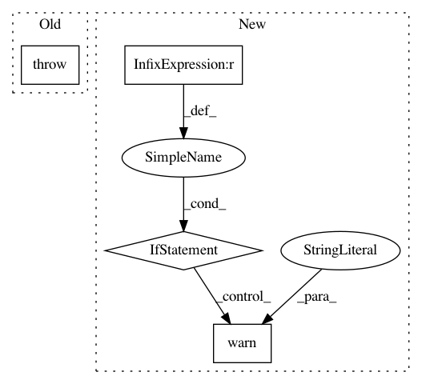

efc54499191ead69f875877badd3578c60eba7a6,nussl/audio_signal.py,AudioSignal,load_audio_from_file,#AudioSignal#,265
Before Change
if signal_length is not None and signal_starting_position >= signal_length:
raise IndexError("signal_starting_position cannot be greater than signal_length!")
try:
with audioread.audio_open(os.path.realpath(input_file_path)) as input_file:
self.sample_rate = input_file.samplerate
After Change
if offset > file_length:
raise ValueError("offset is longer than signal!")
if duration is not None and offset + duration >= file_length:
warnings.warn("offset + duration are longer than the signal. Reading until end of signal...",
UserWarning)
audio_input, self.sample_rate = librosa.load(input_file_path,
sr=None,
offset=offset,
duration=duration,
In pattern: SUPERPATTERN
Frequency: 3
Non-data size: 4
Instances
Project Name: interactiveaudiolab/nussl
Commit Name: efc54499191ead69f875877badd3578c60eba7a6
Time: 2017-02-08
Author: ethanmanilow@gmail.com
File Name: nussl/audio_signal.py
Class Name: AudioSignal
Method Name: load_audio_from_file
Project Name: scikit-image/scikit-image
Commit Name: b46a4961157510eb395028cd9b6cf8739cedb7c2
Time: 2020-01-23
Author: rfezzani@gmail.com
File Name: skimage/filters/ridges.py
Class Name:
Method Name: sato
Project Name: librosa/librosa
Commit Name: d9f36b1c8bb77f6829c51987ce310831730623ba
Time: 2019-12-27
Author: kogito@hotmail.fr
File Name: librosa/feature/inverse.py
Class Name:
Method Name: mfcc_to_mel